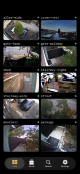

Elsinore
Elsinore is a native client for Frigate, the open-source NVR and object-detection system you run on your own hardware.
It requires a self-hosted Frigate server to function. Elsinore has no cloud backend, no account system, and cannot connect to anything other than the Frigate instance you point it at. If you do not already run Frigate, this app will not be useful to you.
Download on the App Store Get started
Elsinore is a Universal Purchase: the same app covers iPhone, iPad, and Mac.
What it does
**Live**: every camera in one grid, low-latency WebRTC on a single camera,
HLS when WebRTC cannot get through. [Read more](docs/live.html)
**Scrub**: a vertical film reel of the day. Drag through hours of recording
frame by frame, with the dossier card riding along.
[Read more](docs/scrub.html)
**Search**: one feed of alerts and detections, filtered by camera, object,
zone, severity, and time, with a deeper search that queries the footage
itself. [Read more](docs/search-and-review.html)
**Alerts**: a guided setup that asks how much you want to hear, then routes
subjects and places through an attention ladder, plus doorbell rings for a
mapped UniFi Protect doorbell. Needs the sidecar.
[Read more](docs/alerts.html)
**Investigate and Follow**: one object across every camera at once, with a
shared cursor, a "Where next" list, and autoplay that switches cameras for
you. [Read more](docs/investigate.html)
**Mac**: the same app, with keyboard commands, separate camera windows, a
menu bar companion, and Handoff. [Read more](docs/mac.html)

What you need
- Your own Frigate server. Frigate 0.17 or later is the actively tested version.
- A route to it from your device: the same local network, or a remote path such as Tailscale, another WireGuard VPN, or your own reverse proxy.
- Optionally, the Marcellus sidecar next to Frigate. It is what adds push notifications, Live Activities, scrub previews, encounters, and Investigate.
The deal
- No Elsinore account.
- No cloud backend.
- No analytics, no ads, no tracking SDKs.
- Your video never leaves your own infrastructure.
See the privacy policy for the one narrow exception, which covers optional push notifications.
Where to go next
- Documentation: the full manual.
- Getting started: the ten minute path.
- Support: quick answers and how to report a bug.